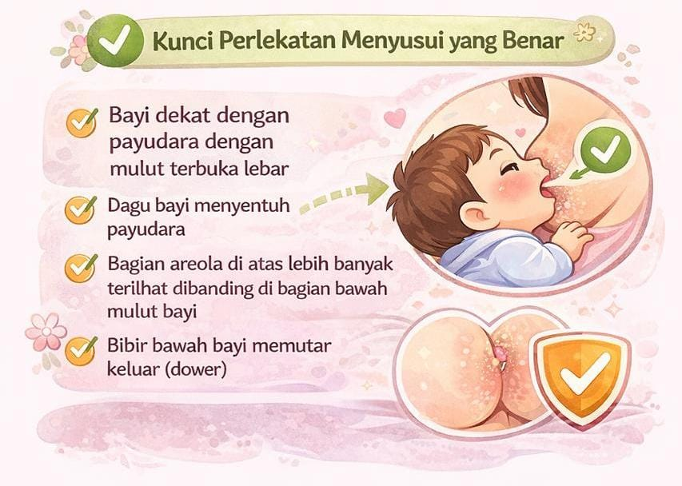

Promosi Kesehatan
Puskesmas Singosari
Bayi baru lahir, penting untuk dilakukan IMD. IMD yaitu Inisiasi Menyusui Dini adalah bayi segera disusui setelah dilahirkan tanpa dibersihkan terlebih dahulu. Biarkan bayi mencari dan menghisap puting susu walaupun ASI belum keluar, dekapdan biarkan bayi menyusu dalam 1 jam pertama kelahirannya.Hal ini berfunsi untuk menjaga kedekatan psikologis antara ibu dan bayi dan mencegah terbuangnya air susu ibu pertama (Kolostrum) Bayi Diberi ASI Ekslusif Pemberian ASI secara eksklusif adalah bayi hanya diberi ASI saja tanpa tambahan makanan yang diberikan selama 6 bulan dianjurkan sampai usia 2 tahun.
Manfaat pemberian ASI:
Kegiatan ini dilakukan oleh bidan yang bertujuan untuk memastikan normalitas dan mendeteksi adanya penyimpangan dari normal. Pemeriksaan yang dilakukan yaitu: Pemeriksaan fisik : Kepala, wajah, mata, hidung, mulut, telinga, leher, tangan, dada, anus, kulit dan sindrom downbaby
Air Susu Ibu (ASI) merupakan satu-satunya nutrisi yang tepat untuk bayi karena mengandung semua zat gizi yang diperlukan untuk pertumbuhan dan perkembangan bayi. Menyusui dimulai segera setelah bayi lahir kemudian diberikan secara eksklusif selama enam bulan, dan dilanjutkan hingga dua tahun atau lebih. Pemberian ASI eksklusif juga merupakan salah satu cara dalam pencegahan stunting di 1.000 Hari Pertama Kehidupan (HPK).
Untuk itu ibu perlu memperhatikan posisi dan perlekatan saat menyusui sehingga pengeluaran ASI dan kenyamanan bagi ibu dan bayi bisa maksimal.

Menyusui bukan hanya ‘tugas’ seorang Ibu. Ibu juga butuh dukungan dan lingkungan yang nyaman dari keluarga dan orang sekitarnya agar dapat memberikan ASI Eksklusif bagi buah hati.
Source: kemkes.go.id